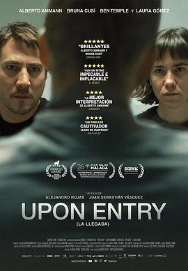

入境时分 / Upon Entry
又名：Border Line
剧情合情合理，本身男主确实不违法，只是移民倾向太过强烈，然而确实不违法。还没有体验过任何海关的小黑屋，希望以后有机会体验体验 🤠
作品信息
| 导演 | 亚历杭德罗·罗哈斯 / 胡安·塞巴斯蒂安·巴斯克斯 |
| 编剧 | 亚历杭德罗·罗哈斯 / 胡安·塞巴斯蒂安·巴斯克斯 |
| 主演 | 阿尔维托·阿曼 / 布鲁娜·库希 / 本·坦普尔 / 劳拉·戈麦斯 / 杰拉德·欧姆斯 / 科林·摩根 / 大卫·科米尔 / 西协琴美 / 劳拉·波尼斯 / 努伊斯·布鲁 / 达瑞尔·詹姆斯·克拉克 / 阿莉西亚·杜兰 / 卡麦拉 / 泰丝·纽曼 / 埃洛伊·桑切兹 / 乔安·佩雷兹·维拉 |
| 类型 | 剧情 |
| 制片国家/地区 | 西班牙 |
| 语言 | 英语 / 西班牙语 / 加泰罗尼亚语 |
| 上映日期 | 2022-11-20(塔林电影节) / 2023-06-16(西班牙) |
| 片长 | 77分钟 |
| IMDb | tt22964884 |
说过什么
2023-11-25 20:08:08
看过 · 时间来自广播，短评来自标记页
剧情合情合理，本身男主确实不违法，只是移民倾向太过强烈，然而确实不违法。还没有体验过任何海关的小黑屋，希望以后有机会体验体验 🤠
2023-11-18 16:11:30
广播 · 想看
最后一次看到是 2026-08-01T11:04:42+10:00 · 豆瓣原页